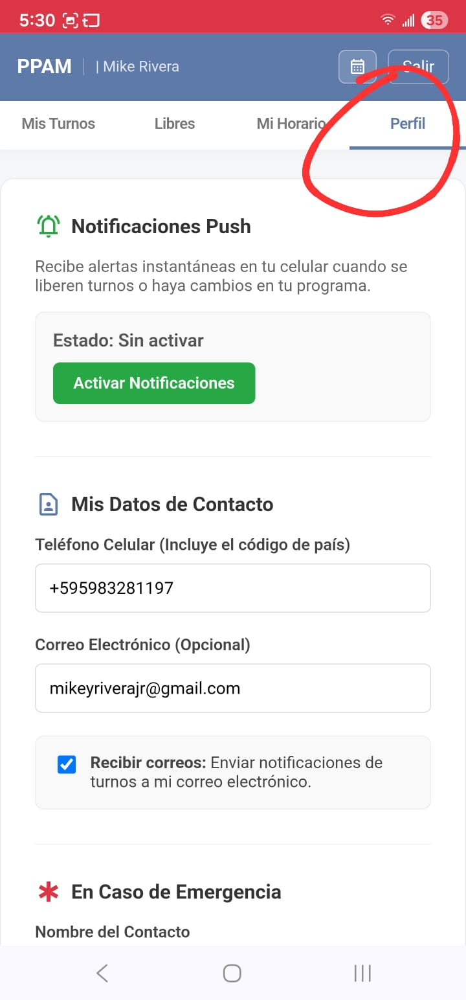

rocket_launch Cómo comenzar a usar la App
Paso 1. Obtén tus credenciales
Consigue tu nombre de usuario y contraseña de uno de los encargados de la PPAM.
Paso 2. Instala la APP
android Si tienes Android:
Mira el siguiente video para aprender cómo instalarla:
phone_iphone Si tienes iPhone:
Sigue estas instrucciones paso a paso:
Presiona el enlace: ppam-enc.org y luego:
- 🧭 Toca el ícono de la brújula abajo a la derecha para salir de WhatsApp y abrir Safari.
- 📤 Toca el botón de Compartir (el cuadrado con la flecha hacia arriba) en la parte de abajo.
- ➕ Desliza el menú hacia abajo y elige "Agregar a inicio".
- ✅ Confirma tocando "Agregar" arriba a la derecha.
¡Y listo! 🎉 La app aparecerá junto a tus otras aplicaciones en tu pantalla de inicio.
Paso 3. Entra y Configura la aplicación
Entra con tus credenciales. Luego, ve a la pestaña "Mi Horario Semanal" y escoge tus turnos disponibles (escoge todas las ubicaciones que encajen con tu horario). Y presiona guardar.

Luego entra en "Mi Perfil" y llena toda la información que te aplique.

Paso 4. Completa tu Informe de Turno
Al finalizar cada turno, en la pestaña "Mis Turnos" aparecerá el botón para enviar un breve Informe de Turno con la cantidad de interacciones y cualquier experiencia positiva. Mira cómo funciona aquí:
Cuando tu turno termina, entra a "Mis Turnos" y toca el botón "Completar Informe de Turno".
Activa las notificaciones push o ingresa tu e-mail bajo perfil para poder recibir notificaciones sobre nuevas asignaciones o cambios.
¡Muchas gracias!
arrow_back Volver al Inicio de Sesión